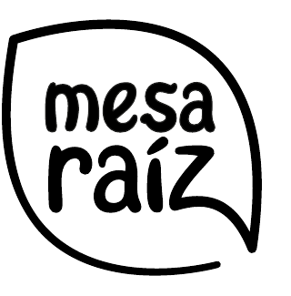

Un alimento que te sostenga
Energía y cuerpo para la comida: arroz, papa, pasta, pan, arepa, tortilla, avena, plátano.
Mesa Raíz
Empieza con lo que sí puedes cambiar

Si algo del video te hizo sentido, quizá es porque comer mejor no siempre se trata de intentarlo con más fuerza.
Muchas veces se trata de tener una forma de organizar tu alimentación que sí funcione con tu vida real.Puedes marcar más de una opción.
No necesitas cambiar toda tu alimentación esta semana. Elige una acción pequeña que haga más fácil esa comida que se te complica.
Cuando no sepas qué comer, no empieces por buscar una receta perfecta. Mira si puedes juntar tres partes:
Energía y cuerpo para la comida: arroz, papa, pasta, pan, arepa, tortilla, avena, plátano.
Huevo, pollo, atún, queso, yogur, lentejas, fríjoles, garbanzos, hummus.
Tomate, aguacate, verduras, fruta, limón, semillas, aceite de oliva, hierbas.
En Mesa Raíz a esto le llamamos Base + Proteína + Complemento. Lo importante es tener una forma sencilla de resolver tus comidas.
Avena + yogur + fruta
Arepa + huevo + tomate
Arroz + pollo + ensalada
Papa + lentejas + aguacate
Pan + hummus + pepino
Tortilla + queso + espinaca
Si marcas varias, probablemente no necesitas exigirte más: necesitas estructura.
Completa con frases cortas. Puedes copiar una opción de la guía o escribir lo primero que se te venga.
Miramos tu rutina, entendemos dónde se desordena tu alimentación y construimos un sistema posible con comidas ancla, compras que conecten y opciones para días difíciles.